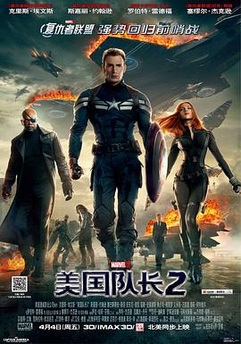

8.1
美国队长2
Captain America: The Winter Soldier
2014
美国
评分 8.1
导演:
安东尼·罗素 / 乔·罗素
演员:
克里斯·埃文斯 / 斯嘉丽·约翰逊 / 塞巴斯蒂安·斯坦 / 安东尼·麦凯 / 海莉·阿特维尔 / 艾米丽·万凯普 / 罗伯特·雷德福
类型:
冒险,动作,科幻
剧情简介
在适应现代社会的过程中，史蒂夫·罗杰斯始终保持着对正义的坚持，但一次例行任务却让他察觉神盾局内部隐藏着某种难以言说的异动。随着调查深入，他发现“洞察计划”表面上以安全为名，实际上却计划利用巨型空天母舰进行全球性监控与清除，违背了他所信奉的一切原则。史蒂夫开始怀疑自己所效力的组织是否仍然值得信任。此时，神盾局遭遇猛烈袭击，尼克·弗瑞在生死边缘成功将一个装有重大秘密的U盘交到史蒂夫手中。不久后，史蒂夫却被高层亚历山大·皮尔斯诬陷为凶手，成为被全球通缉的对象。为了揭开真相，他只能与黑寡妇潜入地下，在混乱的城市与不断收紧的追捕之间穿梭。二人发现敌人的布局远比想象庞大，历史中的阴影势力正在借助科技全面复苏。更令人震撼的是，一个神秘杀手频频阻挠他们的行动，他身手敏捷、冷酷无情，而他竟然与史蒂夫的过去有着紧密联系。随着“猎鹰”加入行动，三人并肩深入敌方核心，试图阻止即将触发的全球危机。影片在紧张的行动节奏中展现了忠诚与背叛交织的矛盾，也让美国队长在追寻真相的过程中重新审视了自由的意义与保护世界的方式。